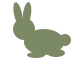

Gabarit conservé
Silhouette / contact

Suspension
Direction opposée
Mode sombre
Retouche demandée le21octobre2026 : supprimer contours, yeux, nez et détails intérieurs. Le gabarit de travail reste inchangé : même caméra de profil et unité80×64. Il ne s’agit pas d’une référence anatomique approuvée par l’utilisateur.

Crâne22unités ; torse40×26 ; oreilles24. Les mêmes sept formes et leurs transformations sont conservées exactement. Seuls leur remplissage et les détails décoratifs changent. Aucune partie n’est réajustée ou étirée pour faire correspondre les poses.
Dans la maquette : échelle uniforme0,8, soit64×51,2px. L’animation ne déforme pas le corps : translation verticale0–3px et réflexion horizontale du second lapin. La variation de hauteur vient du saut, pas d’un changement anatomique. Membres cachés dans cette vue de profil : non vérifiés. Les détails internes sont volontairement absents dans une silhouette unie.